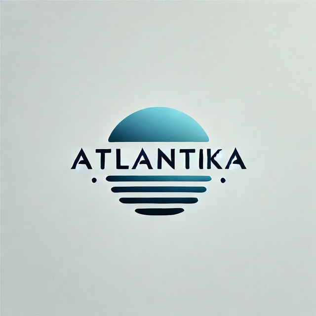

Про автора
Я Сущенко Тимур, розробник цього сайту. Я студент 3 курсу Черкаського Державного Бізнес-Коледжу за 121 спеціальністю.
Я Сущенко Тимур, розробник цього сайту. Я студент 3 курсу Черкаського Державного Бізнес-Коледжу за 121 спеціальністю.